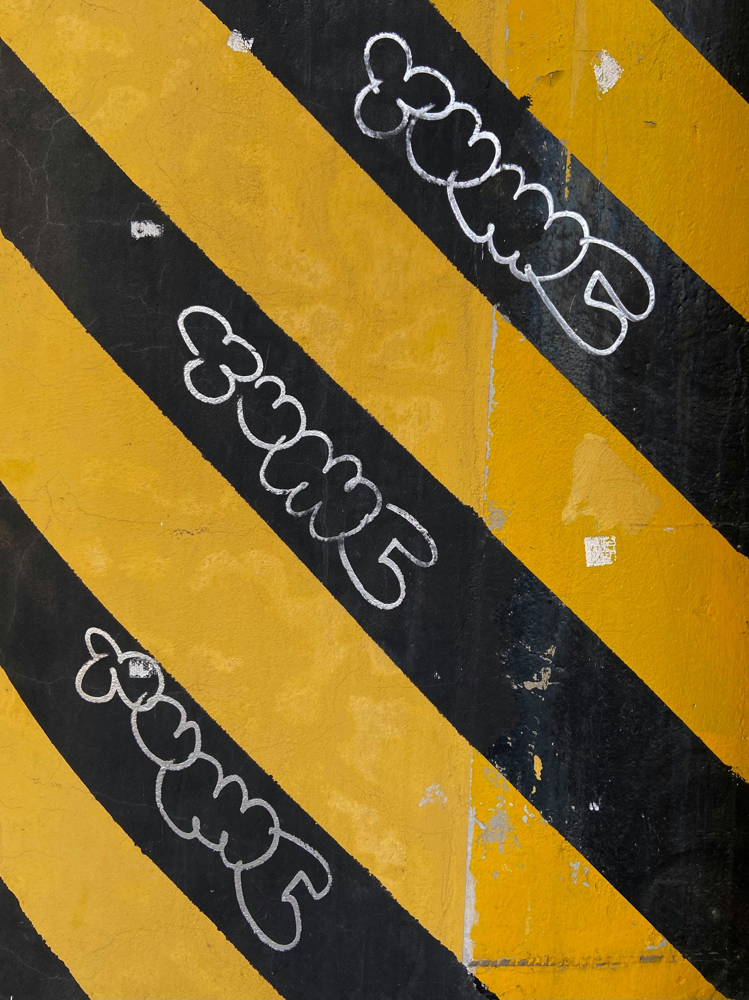

For embassies, NGOs, UN agencies, the AU, and development institutions that need more than a PowerPoint marathon. Strategic interventions — designed for the people shaping Africa's future.
The institutional training market in Addis Ababa is dominated by mediocrity.
Every session is bespoke. These are the domains we work across.
Cultural intelligence is not cultural sensitivity training. It's deep, practical exploration of how culture shapes thought, behaviour, communication, and power — with Africa and Ethiopia specifically at the centre. Addis Ababa is the world's most concentrated intersection of African, diplomatic, and international institutional culture. We operate from inside this context.
Decoding the unspoken context of Addis Ababa. Coffee chat culture, high-context hierarchies, what your pre-departure briefing got wrong. Morning briefing followed by a guided scavenger hunt in the city.
The molecular structure of decision-making in pan-African institutions. How to read power, read rooms, and read processes inside the AU/UN system.
Cross-cultural communication for teams operating across multiple cultures. How power, time, silence, disagreement, trust, and humour differ — and how to adapt in real time.
For global organisations whose HQ is elsewhere. Designed to shift default Western narratives about Africa — not with lectures, but with perspective shifts and structured debate.
The unwritten rules. Communication styles, hierarchy, hospitality, negotiation, religious calendar. Practical and specific to Ethiopia and East Africa.
Most institutional communication is dry, defensive, and donor-facing. We fix that. This pillar teaches the craft of narrative — not as a soft skill, but as a strategic asset that determines funding, trust, and impact perception.
Moving from dry donor reporting to human-centric storytelling. Participants bring a "boring" report and rebuild it into a compelling narrative deck or short-form video concept.
How to write briefs that actually spark innovation rather than just compliance. The art of distilling complex problems into single-sentence challenges.
How mission-driven organisations treat brand as a strategic asset. Shapes trust, funding, staff attraction, and community credibility. Not logos and colours — the full picture.
The pressure to "do something about AI" is everywhere in institutional settings. But most AI training ignores African data ethics, development context, and the specific workflows of NGOs and diplomatic institutions. We don't.
Using Generative AI for strategic budgeting, programme planning, and report synthesis — with a focus on African data ethics and responsible use. Real-time prompting using actual project data. No slide decks.
Using technology and social subcultures to reach the Gen Z demographic in Ethiopia and across the continent. Collaborative session with young local Imagineers from the Vernacular network.
Breaking down team silos and re-aligning on the reason for being. Using the VMS to surface friction, challenge assumptions, and rebuild a team charter that people actually believe in.
How to be a rebel and innovator while working within the rigid constraints of a large institution. 90-minute weekly sessions followed by real-world application tasks.
The highest-value engagements. Custom design. Highest investment. Highest impact.
High-level strategic planning for leadership teams that need to think differently about the next five years. Curated environment, structured provocation, VMS deep-dive.
Mastering institutional communication during crises or sensitive diplomatic shifts. Real-time simulation with professional scenario actors to test messaging, composure, and decision-making under fire.
One alignment call to customise the session to your team's specific context, challenge, and goals. No generic delivery. Ever.
A concise roadmap of key insights, decisions made, and recommended next steps. Not a set of slides. Something you'll actually use.
A high-quality Vernacular Labs certificate that participants can add to their professional record. Institutional environments value credentials. We deliver them.
One 60-minute follow-up call for the team lead, 30 days after the session. To assess implementation, unblock problems, and make the learning stick.
New staff arrivals needing deep local context. Existing teams needing cross-cultural recalibration. Diplomatic mission leadership needing strategic provocation.
UNECA, UNHCR, UNICEF, WHO, WFP — we understand your mandates. We speak your language and we know how to deliver within institutional constraints without compromising on quality.
International NGOs operating in Ethiopia and across the Horn. Organisations that need to communicate impact better, align teams across cultures, or navigate complex institutional dynamics.
Several modules are available virtually or in other locations. The Pirate Manager programme runs entirely in virtual format. We travel for high-stakes engagements.
Every engagement begins with a free review call. We design from there.
No generic off-the-shelf programmes. One alignment call. We design from there.